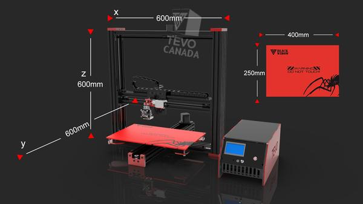

About
An easy assembly printer based off the Prusa i3 design. All parts of the Black Widow are open source.
Specifications
| Layer resolution | 50 microns |
| MAX Printing Speed | 150 mm/s |
| Build size | 200X 200 X 200mm. Large print area of 200 x 280 x 200 mm (Optional) |
| Material type | PLA, ABS, PETG, Wood, PVA and Flexible Filaments (With Pro Metal Extruder) |
| Positioning accuracy | Z 0.04mm, XY 0.012mm |
| Nozzle diameter | 0.4mm (customized 0.3mm/0.2mm) |
| Recommended extruder temperature | 210°C (the maximum can be set to 260°C) |
| Heating plate temperature | 60-120°C (proper winter warming and summer appropriate cooling) |
| Power requirements | 220V, 250W, 50Hz, 0.89A |
| Connection | TF card or USB |
| File print format | STL,G-Code |
| Compatibility | Windows, Linux, Mac |